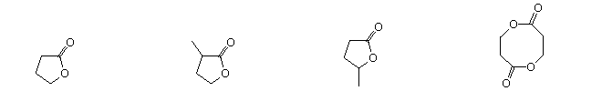

When one substituent and one hydrogen atom are attached at each of more than two positions of a monocycle, the steric relations of the substituents may be expressed by first identifying a reference substituent (labeled r) followed by a hyphen and the substituent locator number and name. The relative configuration of other substituents are then reported as cis (c) or trans (t) to the reference substituent.
When two different substituents are attached at the same position of a monocycle, then the lowest-numbered substituent named as a suffix is selected as reference group. If none of the substituents is named as a suffix, then that substituent of the pair of substituents having the lowest number, and which is preferred by the sequence rule, is chosen as the reference group. The relationship of the sequence-rule-preferred substituent at geminally substituted positions, relative to the reference group, is cited as c- or t-, as appropriate.
An alternative system which specifies the absolute configuration of substituted carbon atoms may also be used. This system, known as the Cahn-Ingold-Prelog rules, uses and elaborates the priority rules developed earlier.
This page is the property of The Edvibe Team. Comments, questions and errors should be sent to contact@edvibe.co.ke. These pages are provided to the IOCD to assist in capacity building in chemical education. 05/05/2013
The previous discussion has focused on the carbon framework that characterizes organic compounds, and has provided a set of nomenclature rules that, with some modification, apply to all such compounds. An introduction to functional group nomenclature was limited to carbon-carbon double and triple bonds, as well as simple halogen groups. There are, however, many other functional groups that are covered by the IUPAC nomenclature system. A summary of some of these groups and the characteristic nomenclature terms for each is presented in the following table. Specific examples of their nomenclature will be provided as the chemistry of each group is discussed.
Note that only one functional group suffix, other than "ene" and "yne", may be used in a given name. The following table gives the priority order of suffix carrying groups in arriving at a IUPAC name. When a compound contains more than one kind of group in this list, the principal characteristic group is the one nearest the top. All other groups are then cited as prefixes.
Several methods of naming lactones have been used. Four of these are illustrated below.
